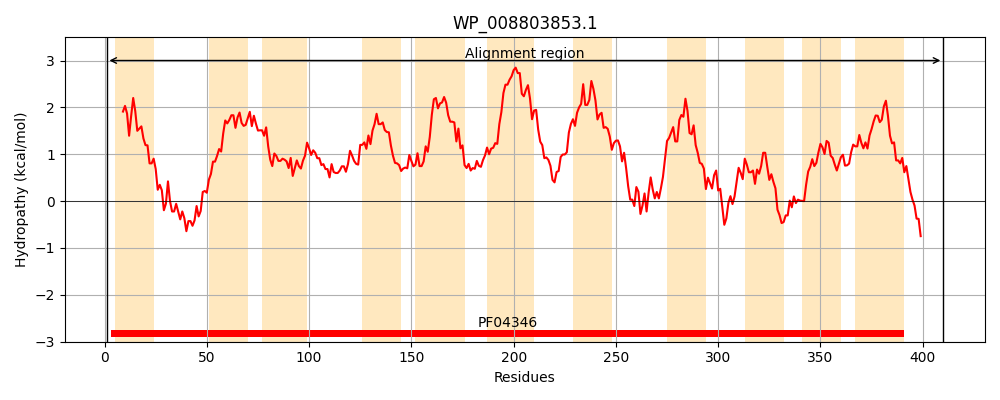
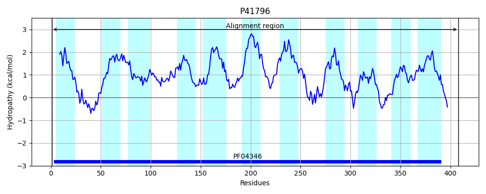
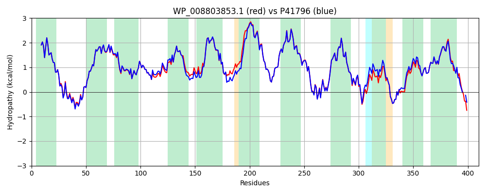

Hit Accession: P41796
Hit TCID: 9.A.28.1.1
Hit Description: gnl|BL_ORD_ID|10416 gnl|TC-DB|P41796|9.A.28.1.1 Ethanolamine utilization protein eutH (Putative ethanolamine transporter) - Salmonella typhimurium.
Mach Len: 410
e:0.000000
Query TMS Count : 11
Hit TMS Count: 11
TMS-Overlap Score: 11.350000
Predicted Substrates:CHEBI:4880;ethanolamine
BLAST Alignment:
Score: 1930 , Bit scores: 748 bits, E-value: 0.0e+00, Alignment length: 410, Percentage identity: 93
Query: 1 MGINEIIMYIMMFFMLIAAVDRILSQFGGSARFLGKLGKSIEGSGGQFEEGFMAMGALGLAMVGMTALAPVLAHLLGPVIIPLYEMLGANPSMFAGTLLACDMGGFFLAKELAGGDVAAWMYSGLILGSMMGPTIVFSIPVALGIIEPADRRWLALGVLAGIVTIPIGCIAGGLVAMYSGVEINGQPVAFTFALILMNMIPVIIVAVLVALGLKFIPEKMINGFQIFAKFLVALITIGLAAAVIKFLLGWELIPGLDPIFMAPGDQPGEVMRAIEVIGSISCVLLGAYPMVLLLTRWFEKPLMRVGNLLKINNMAAGGMVATLANNIPMFGMMKQMDTRGKVINCAFSVSAAFALGDHLGFAAANMNAMIFPMIVGKLVGGVTAIGVAMLLVPKDENVPAPANTEAEAHS 410
MGINEIIMYIMMFFMLIAAVDRILSQFGGSARFLGK GKSIEGSGGQFEEGFMAMGALGLAMVGMTALAPVLAH+LGPVIIP+YEMLGANPSMFAGTLLACDMGGFFLAKELAGGDVAAW+YSGLILGSMMGPTIVFSIPVALGIIEP+DRR+LALGVLAGIVTIPIGCIAGGL+AMYSGV+INGQPV FTFALILMNMIPV+IVAVLVALGLKFIPEKMINGFQIFAKFLVALITIGLAAAV+KFLLGWELIPGLDPIFMAPGD+PGEVMRAIEVIGSISCVLLGAYPMVLLLTRWFEKPLM VG LL +NN+AA GMVATLANNIPMFGMMKQMDTRGKVINCAF+VSAAFALGDHLGFAAANMNAMIFPMIVGKL+GGVTAIGVAM+LVPKD+ A TEAEA S
Sbjct: 1 MGINEIIMYIMMFFMLIAAVDRILSQFGGSARFLGKFGKSIEGSGGQFEEGFMAMGALGLAMVGMTALAPVLAHVLGPVIIPVYEMLGANPSMFAGTLLACDMGGFFLAKELAGGDVAAWLYSGLILGSMMGPTIVFSIPVALGIIEPSDRRYLALGVLAGIVTIPIGCIAGGLIAMYSGVQINGQPVEFTFALILMNMIPVLIVAVLVALGLKFIPEKMINGFQIFAKFLVALITIGLAAAVVKFLLGWELIPGLDPIFMAPGDKPGEVMRAIEVIGSISCVLLGAYPMVLLLTRWFEKPLMNVGKLLNVNNIAAAGMVATLANNIPMFGMMKQMDTRGKVINCAFAVSAAFALGDHLGFAAANMNAMIFPMIVGKLIGGVTAIGVAMMLVPKDD--AAQVKTEAEAQS 408 | Protein Hydropathy Plots: |
|---|
|  |  |
Pairwise Alignment-Hydropathy Plot:
|
|---|
|  |